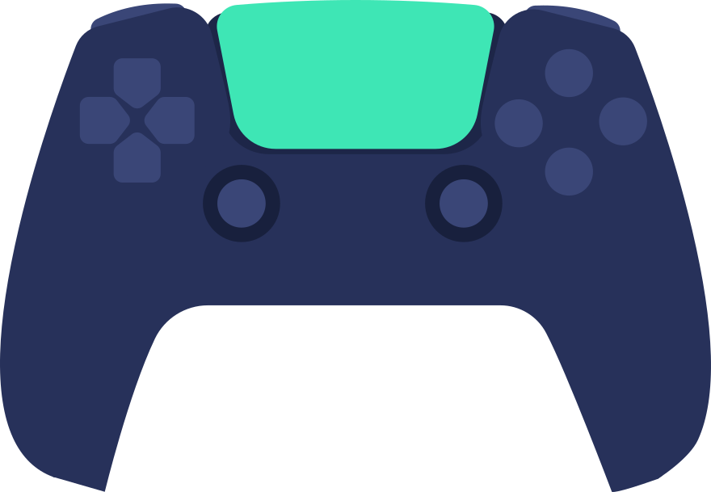
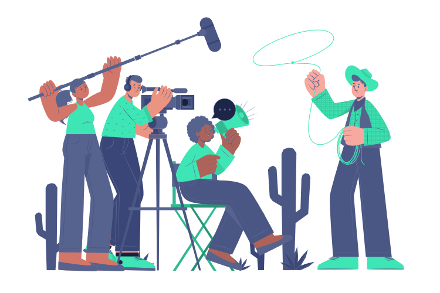

01Анімація. Види анімації▼
Анімація — це ілюзія руху, створена швидкою зміною кадрів (зазвичай 12–24 кадри на секунду). Види: мальована (класична), лялькова та пластилінова, стоп-моушн, комп’ютерна 2D і 3D, motion-дизайн (анімовані графіка й текст).
Ключові поняття
- Кадр
- окреме зображення в послідовності
- FPS
- кількість кадрів на секунду
- Стоп-моушн
- покадрова зйомка нерухомих об’єктів
Корисні ресурси
- Вікіпедія: Анімація — історія та види
Інструменти
02Комп’ютерна анімація▼
У комп’ютерній анімації не обов’язково малювати кожен кадр: художник задає ключові кадри, а програма сама обчислює проміжні (твінінг). Так створюють мультфільми, ігри, рекламу, анімовані інтерфейси.

Ключові поняття
- Ключовий кадр
- кадр, у якому задано положення об’єкта
- Твінінг (tweening)
- автоматичне обчислення проміжних кадрів
- Таймлайн
- шкала часу з кадрами й шарами
Інструменти
03Поняття растрової та векторної анімації▼
Растрова анімація складається з растрових кадрів (GIF, піксель-арт, мальована покадрова анімація) — вона деталізована, але важка. Векторна анімація рухає векторні об’єкти — файли легкі й масштабуються без втрат (SVG, Lottie, анімація у Flash/Animate).
Ключові поняття
- GIF
- растровий формат коротких анімацій
- Lottie
- формат легкої векторної анімації для сайтів і застосунків
Корисні ресурси
- LottieFiles — тисячі безкоштовних векторних анімацій
Інструменти
04Тривимірне моделювання та анімація▼
3D-модель — це об’ємний об’єкт із вершин, ребер і граней (полігонів). Етапи: моделювання → текстурування → освітлення → анімація → рендеринг (отримання готового зображення чи відео). 3D використовують у кіно, іграх, архітектурі, машинобудуванні й 3D-друці.
Ключові поняття
- Полігон
- грань 3D-моделі
- Текстура
- зображення, накладене на поверхню моделі
- Рендеринг
- розрахунок фінального зображення сцени
Корисні ресурси
- Sketchfab — тисячі 3D-моделей, які можна покрутити в браузері
05Особливості роботи з відео▼
Відео характеризується роздільною здатністю (HD, Full HD, 4K), частотою кадрів, бітрейтом і форматом (контейнер MP4/MOV + кодек H.264/H.265). Для соцмереж важливе співвідношення сторін: 16:9 — YouTube, 9:16 — Reels, TikTok, Shorts. Хороше відео починається зі сценарію та якісного світла й звуку.

Ключові поняття
- Роздільна здатність
- 1280×720 (HD), 1920×1080 (Full HD), 3840×2160 (4K)
- Кодек
- алгоритм стиснення відео
- Співвідношення сторін
- 16:9, 9:16, 1:1
Корисні ресурси
- HandBrake — переконвертування й стиснення відео
Інструменти
06Програми для роботи з відео▼
Відеоредактори на комп’ютері: DaVinci Resolve (професійний і безкоштовний), Shotcut, Kdenlive, Clipchamp (вбудований у Windows). Основні операції: імпорт, нарізка на таймлайні, переходи, титри, музика, колірна корекція, експорт.
Ключові поняття
- Монтаж
- з’єднання фрагментів відео в цілісний ролик
- Перехід
- ефект між двома кліпами
- Експорт
- збереження готового відео у файл
Інструменти
07Онлайн сервіси та мобільні застосунки для роботи з відеоє матеріали▼
Для швидкого монтажу достатньо браузера чи телефона: CapCut, Canva Video, Clipchamp, InShot. Вони мають шаблони, автоматичні субтитри, бібліотеки музики та ефектів. Перевіряй ліцензію музики перед публікацією.
Ключові поняття
- Автосубтитри
- автоматичне розпізнавання мови в текст
- Шаблон
- готова структура ролика, куди підставляєш свої кадри
Матеріали на сайті
08Практична робота: Створення відео для соціальних мережпрактична▼
Зніми й змонтуй вертикальне відео (9:16, 30–60 с) про свою професію чи ліцей: сценарій з 3–5 сцен, титри, музика без порушення авторських прав, експорт у MP4.
Інструменти
09Тематична атестаціяатестаціяє матеріали▼
Повтори: види анімації, ключові кадри, растрову й векторну анімацію, етапи 3D-моделювання, параметри відео, програми та сервіси для монтажу.
Матеріали на сайті

Перевір себе з розділу 9
10 випадкових карток із ключовими поняттями розділу. Що не згадав — підкажемо, де повторити.
🃏 Почати картки